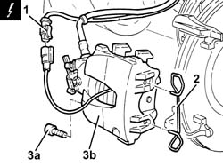
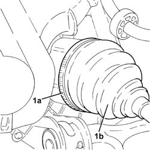
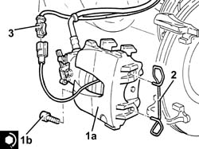

2110D64 DIFFERENTIAL LEFT SHAFT OIL SEAL - R.R.
- Path
- Procedures > 21 GEARBOX > 2110 MANUAL GEARBOX AND DIFFERENTIAL > 2110D manual gearbox differential > 2110D64 DIFFERENTIAL LEFT SHAFT OIL SEAL - R.R.
- Kind
- repair procedure (removal / refitting; the operation number is the code)
- Applies to
- engines: 2.4 JTD 20v; all production periods
- Interactive page
- https://sloeber94.github.io/elrnDB-a156/en/#/3238013
Applies to: engines: 2.4 JTD 20v; all production periods
 Removing
Removing
 Refitting
RefittingPosition the vehicle on the ramp
Proceed with removal 4450B02 left front wheel r r .
Proceed with removal - 7055B90 Left front WHEEL ARCH LINER - R.R. .
Proceed with removal 4410A80 damper lower fork - r r (Left side).
1. Disconnect the electrical connection for the left brake pad wear sensor.
 | Name | Connector |
|---|---|---|
1 | Left brake pad wear (switch) sensor |
2. Remove the clip fastening the left front brake caliper to the bracket.
3. Undo the bolts (3a) and move the left front brake caliper (3b) sideways and secure it.

Applies to: engines: 2.4 JTD 20v; all production periods
1. Loosen the band (1a) and disconnect the left driveshaft (1b) from the differential internal driveshaft.

Applies to: engines: 2.4 JTD 20v; all production periods
Proceed with removal 2110D65 LEFT DIFFERENTIAL SHAFT OIL SEAL - R.R. WITH DRIVESHAFT REMOVED .
Applies to: engines: 2.4 JTD 20v; all production periods
Refitting
RemovingProceed with refitting 2110D65 LEFT DIFFERENTIAL SHAFT OIL SEAL - R.R. WITH DRIVESHAFT REMOVED .
Connect the left driveshaft to the differential internal driveshaft and tighten the band.
1. Place the left front brake caliper (1a) back in its housing and tighten the bolts (1b) to the recommended torque.
 | Fastening | Component | Ø | Value (daNm) |
|---|---|---|---|---|
1b | - | - | - | - |
2. Place the clip fastening the left front brake caliper to the bracket back in its housing.
3. Connect the electrical connection for the left brake pad wear sensor.

Applies to: engines: 2.4 JTD 20v; all production periods
Proceed with the refitting 4410A80 damper lower fork - r r (Left side).
Proceed with refitting - 7055B90 Left front WHEEL ARCH LINER - R.R. .
Proceed with refitting 4450B02 left front wheel r r .
Refill the manual gearbox and differential fluid - 0010T41 MANUAL GEARBOX OIL - Check level and top up, if necessary .
Remove the car from the ramps.